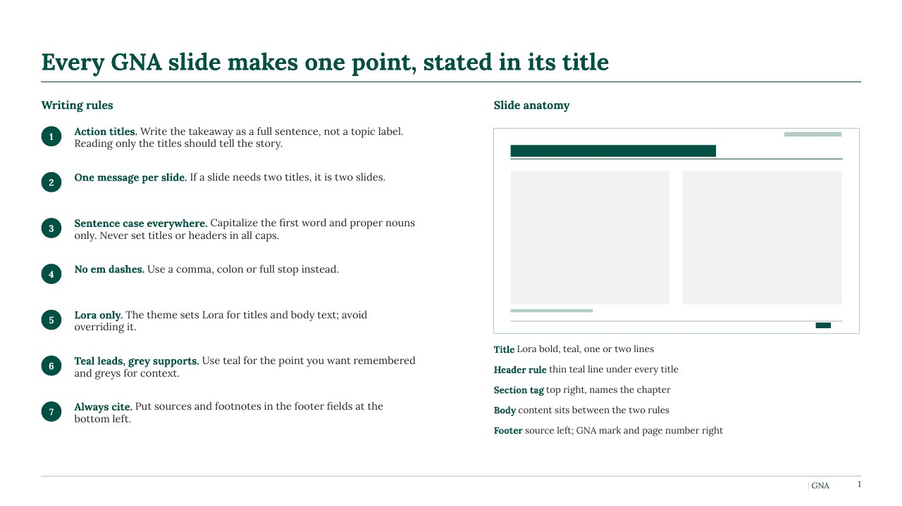
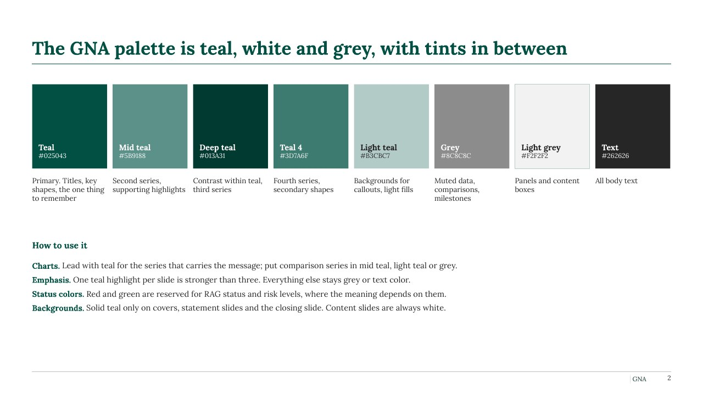
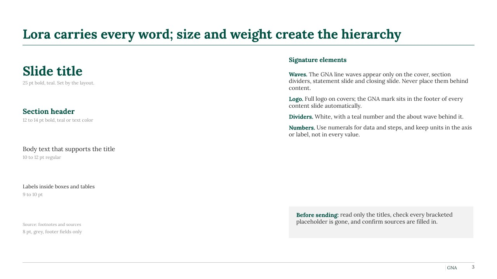

Recently used
Click a slide to insert it after the current slide.
Insert settings
Auto uses this deck's theme when it already has the GNA master, so no duplicate masters pile up. Otherwise it keeps the template formatting.
Default slide lineups from the GNA deck rules. Open one as a new deck, or add it to the deck you have open.
Tools apply to the selected slides. Select several in the thumbnail pane to apply them all at once.
Sticker
Source line
Section tag
[NEEDED] flag
Add-ins can't apply text highlighting yet. After wrapping, use Home > Text Highlight Color > Yellow.
Status dots
Placed next to the selected shape. Red and green are for status and risk only.
Harvey balls
Inserted mid-slide as a picture; drag it into place.
Checks the whole deck against GNA house style before it goes to a client.
Open [NEEDED] flags
Can't be checked automatically: one message per slide, action titles that tell the story, one teal highlight per slide. Read the titles in order before sending.
House rules
- Action titles. State the takeaway as a full sentence. Reading only the titles tells the story.
- One message per slide. If a slide needs two titles, it is two slides.
- Sentence case. Capitalize the first word and proper nouns only.
- No em dashes. Use a comma, colon or full stop.
- Lora only. Don't override the theme font.
- One teal highlight per slide. Teal leads, grey supports.
- Always cite. Source line bottom left: "Source: [Client] data" or "Source: GNA analysis".
- White content slides. Solid teal only on covers, statements and closing.
- No big-number layouts. Show numbers inline in compact rows.
Style guide slides


